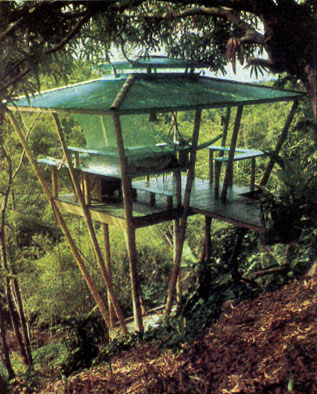
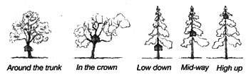
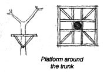
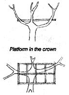
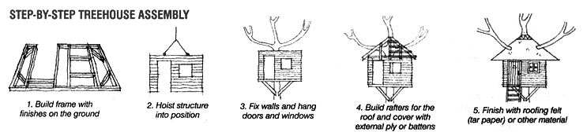
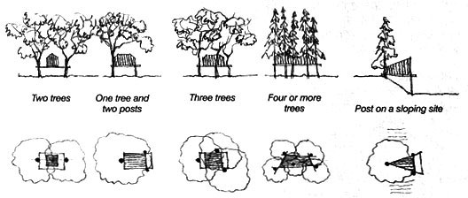

A treehouse is a place where you can give free rein to your individual creativity. But while there may be almost as many types of treehouses as there are types of trees, some general principles do apply when it comes to building a treehouse. (For creative examples of custom treehouses, see Treehouse Living: 4 Custom, Eco-friendly Options.)
Before you begin your treehouse plans, check with your local planning authorities about whether there are any restrictions on building treehouses. In some places, if a structure is below a certain size and not used as a permanent dwelling it will not need planning approval, but there may be restrictions on height or on windows overlooking adjacent properties.
Safety is vital during construction. Always use a safety harness, and firmly tie it and any ladders to a strong branch. Think before you act, and keep a first aid kit handy. Most importantly: Have fun!
First, you need to choose a tree and decide on a position within it for your treehouse. Think about what you want from your treehouse: Will it be an adult hideaway or children's play area? If you are considering a treehouse for children, keep it close to the ground: 5 feet (1.5 meters) is fine, and seems much higher when you are up there.
Consider whether you want your treehouse to be hidden or visible, and make sure it will not disturb other people.
Choose a mature, healthy tree with no special protection orders on it that may affect pruning. When selecting a tree it is best to consult a qualified arborist, and if any pruning is necessary have this done professionally. Decide how you want to access your treehouse and what materials you want to use. Whatever you decide, it's best to start small and simple.
Every tree is different, so let the tree be your guide. Follow the form of the tree, allow for growth and movement, and keep the structure lightweight. Keep the various positions of the sun in mind when planning small decks as well. It you don't have one tree that seems right, then several closely spaced, smaller trees will suffice; these may be supplemented with one or more posts sunk in the ground. Although some treehouse builders advocate a free-form approach, it's safest to plan the structure on paper before starting work. Allow for a deck if you want one, and don't make the treehouse too big for the tree.
The platform, providing a secure foundation for the rest of the structure, is the key element of almost any treehouse. It should be built close to the trunk, with diagonal bracing for extra strength, if it is not supported by branches or posts. Make sure the platform is level, and keep it balanced centrally around the tree to support uneven loads and reduce swaying. When securing the structure, do everything you can to limit damage to the tree. Rope lashing is preferable to nails, but make sure you know the right knots. Otherwise, choose strong galvanized or stainless steel coach (lag) screws, as ungalvanized nails will rust and encourage disease and rot. Don't cut the bark all the way round, or constrict it too tightly with rope or wire - this can quickly kill the tree.
Once the platform is secure, you need to add the floor. For this you might use exterior plywood sheets or proper tongue-and-groove floorboards. The walls can either be built in situ in the tree or prefabricated on the ground and then hoisted up into position (for larger treehouses the latter is much easier and safer).
To minimize the amount of work done while perched up in the tree, you can even add external wall finishes on the ground (some options are shown in the Image Gallery) and prefix doors and windows. The roof may also be pre-assembled, but if branches are to penetrate it, or if it is an irregular shape, it is generally best to build it in situ. Once in position the roof can be covered with external plywood and finished with roofing felt (tar paper). You can use battens and then finish with local materials such as recycled shingles, thatch or palm leaves.
There's no need to adhere to convention in a treehouse. This is a place to experiment and indulge your design fantasies. Whether your taste leans toward Gothic towers or rustic cottages, the possibilities for windows and doors are endless. The important thing is to keep them in proportion to the size and design of the treehouse. For safety and lightness, use Perspex or Plexiglas instead of glass for windows. Try to use old or recycled items whenever possible.
Nothing can beat the experience of sitting outside a treehouse, right among the leaves and branches, on an outside deck, balcony or veranda. A deck can be part of the treehouse platform (it could be an extension constructed at a later date), or it might be in a separate place nearby, perhaps at a different level and reached by a rope bridge or wooden walkway. Whichever you choose, the deck needs to be surrounded by safe railings. Functional these may be, but as with doors and windows, you can still give your imagination free rein. For something different, why not make a giant hammock by attaching a strong rope net to the deck? Spread with pillows and cushions it makes a great place to relax.
Now that you've built your treehouse, how will you get up there? A simple wooden or rope ladder is fine if the house is not far from the ground, but steps (with handrails) are better for higher treehouses. Spiral steps winding around the trunk are always fun and look more natural than a straight flight. If higher still, it is a good idea to break the journey with a series of landings. Sometimes it is possible to build a bridge or rope walkway from an adjacent tree, building or area of high ground. For really high treehouses a rope pulley system with a harness or chair may be the most convenient method - but you need to be prepared to rappel down. A rope pulley with a basket is indispensable for hoisting up provisions, whether your treehouse is high or low.
After all the effort involved in designing and building a treehouse, the last thing you want is for it to fall down - especially if you happen to be inside at the time. Remember to check the floors, decks and railings frequently for rot or weakness. Inspect any steps, ladders and walkways, and repair damage immediately. Check the tree annually for growth and movement, and adjust or refix attachments to the tree as necessary.
An eco-friendly treehouse means using as much recycled and waste material as possible. Building material suppliers and building sites are a good source of waste wood, plywood and slightly damaged materials. But for structural use avoid wood with too many knots. Pressure treated wood will last longer but may contain toxic chemicals, so wear gloves and don't breathe in sawdust. Avoid endangered tropical hardwoods at all costs, and only use new wood that is certified as supplied from sustainable, managed resources. To avoid further depletion of Western red cedar, use only recycled shingles or shakes. Building reclamation depots are also wonderful places to find cheap supplies of old doors, windows, ladders, stoves and other interesting bits and pieces. Salvaged materials help give an individual touch, too.
To preserve and decorate your treehouse, use nontoxic, eco-friendly stains, varnishes and paints. If you plan to occupy your treehouse in relative comfort throughout the year, you will need to insulate the floor, walls and roof; draught-proof the doors and windows; and possibly double-glaze the windows to conserve energy.
|
 JO SCHEER Treehouse plans come in all shapes and sizes. Before you're resting in a hammock in your dream treehouse, check out these useful building tips. |
 CHELSEA GREEN There are many options for where to position your treehouse in relation to the tree itself. |
 CHELSEA GREEN You may choose to place your treehouse platform around the tree's trunk. |
|
 CHELSEA GREEN The platform can also go higher up, in the crown of the tree. |
 CHELSEA GREEN Follow these five main steps when constructing your treehouse. |
 CHELSEA GREEN When scoping out your treehouse location, keep in mind that you don't have to use just one tree. |